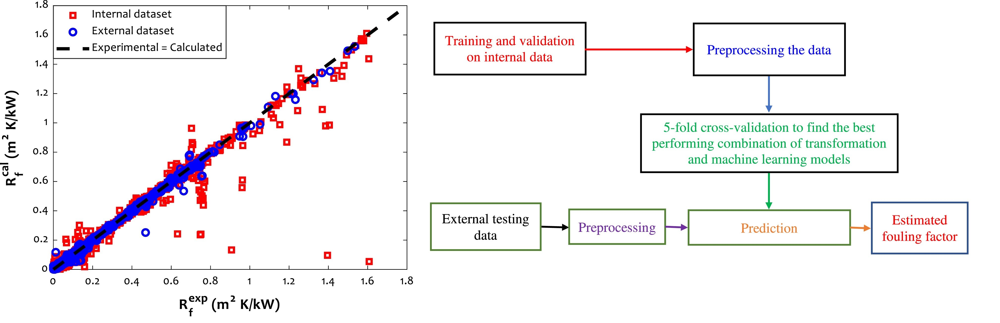

Novel and robust machine learning approach for estimating the fouling factor in heat
exchangers

The fouling factor is an operating index for measuring an undesirable effect of solids' deposition
on the heat transfer ability of heat exchangers. Accurate prediction of the fouling factor helps
appropriate scheduling of the cleaning cycles. Since diverse factors affect this operating
feature, it is sometimes hard to estimate the fouling factor accurately using simple empirical
or traditional intelligent methods. Therefore, this study employs five machine-learning algorithms
to estimate the fouling factor as a function of operating and constructing variables.
A Novel Non-Invasive Estimation of Respiration Rate From Motion Corrupted Photoplethysmograph
Signal Using Machine Learning Model

Respiratory ailments such as asthma, chronic obstructive pulmonary disease (COPD), pneumonia, and
lung cancer are life-threatening. Respiration rate (RR) is a vital indicator of the wellness of a
patient. Continuous monitoring of RR can provide early indication and thereby save lives. However,
a real-time continuous RR monitoring facility is only available at the intensive care unit (ICU)
due to the size and cost of the equipment. This paper describes a novel approach for RR estimation
using motion artifact correction and machine learning (ML) models with the PPG signal features.
Estimating Blood Pressure from the Photoplethysmogram Signal and Demographic Features Using
Machine Learning Techniques

Hypertension is a potentially unsafe health ailment, which can be indicated directly from the blood
pressure (BP). Hypertension always leads to other health complications. Continuous monitoring of
BP is very important; however, cuff-based BP measurements are discrete and uncomfortable to the
user. To address this need, a cuff-less, continuous, and noninvasive BP measurement system is
proposed using the photoplethysmograph (PPG) signal and demographic features using machine
learning (ML) algorithms.